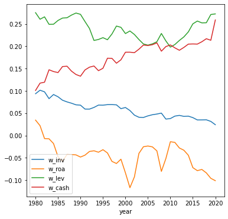
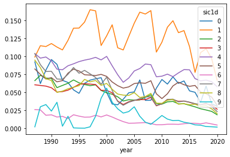
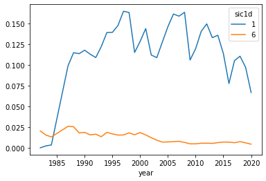
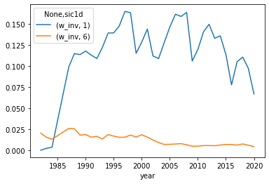
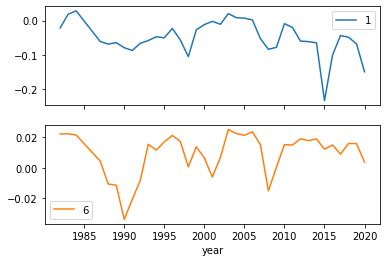
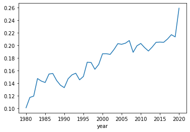
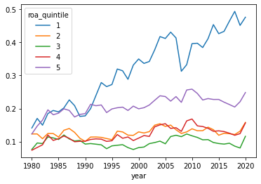
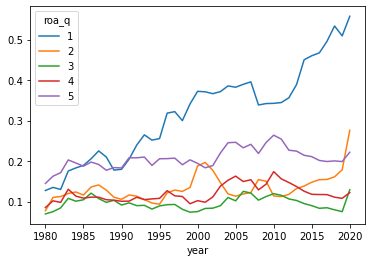

import pandas as pd
import numpy as npL14: Conditional stats applied
Lecture overview
Loosely speaking, “conditional descriptive statistics” are statistics calculated for subsamples (subsets) of your data. The information you use to create these subsamples is referred to as the “conditioning information”. In this lecture, we showcase these types of descriptive statistics using the tools learned in the previous lecture, and a panel dataset: the “compa” file, which contains accounting information for multiple firms over multiple years.
In the previous lecture we calculated conditional statistics in situations where the variable which dictated what observations are in what subsample already exists in the dataset. For example, we calculated average returns for each industry separately. In that example, the returns of each individual industry constitute a separate subsample of our data. The “conditioning information” which allowed us to specify which observation was in what sample was the “Industry” variable (which already existed in the dataset).
In this lecture, we will focus on examples where we have to create ourselves the variable which specifies which observation is in what sample.
Preliminaries
Get raw data:
comp_raw = pd.read_pickle('../data/compa.zip')
comp_raw.dtypespermno float64
datadate object
gvkey object
tic object
conm object
at float64
capx float64
che float64
cogs float64
csho float64
dlc float64
dltt float64
dp float64
dvc float64
ib float64
oancf float64
ppegt float64
ppent float64
revt float64
sale float64
fic object
prcc_f float64
sich float64
dtype: objectClean it up a bit:
# Sort by firm identifier and date
comp_raw.sort_values(['permno','datadate'], inplace = True)
# Extract year from the date
comp_raw['year'] = pd.to_datetime(comp_raw['datadate']).dt.year
comp_raw.head(2)| permno | datadate | gvkey | tic | conm | at | capx | che | cogs | csho | ... | ib | oancf | ppegt | ppent | revt | sale | fic | prcc_f | sich | year | |
|---|---|---|---|---|---|---|---|---|---|---|---|---|---|---|---|---|---|---|---|---|---|
| 188730 | 10000.0 | 1986-10-31 | 013007 | OMFGA | OPTIMUM MANUFACTURING -CL A | 2.115 | 0.240 | 0.348 | 0.511 | 3.843 | ... | -0.730 | NaN | 0.328 | 0.189 | 1.026 | 1.026 | USA | 0.75 | NaN | 1986 |
| 188550 | 10001.0 | 1986-06-30 | 012994 | EGAS | GAS NATURAL INC | 12.242 | 0.551 | 0.746 | 19.565 | 0.985 | ... | 0.669 | NaN | 13.021 | 8.216 | 21.460 | 21.460 | USA | 6.00 | NaN | 1986 |
2 rows × 24 columns
Create a new dataframe with firm and year identifiers for firms with positive total assets:
comp = comp_raw.loc[comp_raw['at']>0, ['permno','year', 'sich']].copy()And calculate some key variables:
comp['inv'] = comp_raw['capx'] / comp_raw['at']
comp['roa'] = comp_raw['ib'] / comp_raw['at']
comp['lev'] = (comp_raw['dlc'] + comp_raw['dltt']) / comp_raw['at']
comp['cash'] = comp_raw['che'] / comp_raw['at']comp.describe()| permno | year | sich | inv | roa | lev | cash | |
|---|---|---|---|---|---|---|---|
| count | 237017.000000 | 237017.000000 | 192174.000000 | 221486.000000 | 236472.000000 | 235458.000000 | 236417.000000 |
| mean | 59908.145365 | 1999.543877 | 4734.864368 | 0.060206 | -0.056431 | 0.243002 | 0.174782 |
| std | 28075.843586 | 11.096752 | 1986.202863 | 0.111862 | 1.494764 | 0.313886 | 0.219955 |
| min | 10000.000000 | 1980.000000 | 100.000000 | -2.093398 | -218.000000 | -0.050045 | -0.069190 |
| 25% | 33420.000000 | 1991.000000 | 3320.000000 | 0.011996 | -0.032695 | 0.042258 | 0.025310 |
| 50% | 75049.000000 | 1999.000000 | 4581.000000 | 0.035232 | 0.018931 | 0.191382 | 0.080652 |
| 75% | 83492.000000 | 2008.000000 | 6321.000000 | 0.075212 | 0.061761 | 0.369135 | 0.234988 |
| max | 93436.000000 | 2020.000000 | 9998.000000 | 31.000000 | 226.310379 | 39.592899 | 1.000000 |
Challenge
Winsorize the ‘inv’,‘roa’,‘lev’,‘cash’ variables at the 1 and 99th percentiles and get full-sample summary statistics for them.
for var in ['inv','roa','lev','cash']:
comp[f'w_{var}'] = comp[var].clip(lower=comp[var].quantile(0.01),
upper=comp[var].quantile(0.99))comp.filter(like='w_').agg(['mean','std'])| w_inv | w_roa | w_lev | w_cash | |
|---|---|---|---|---|
| mean | 0.058342 | -0.046949 | 0.236951 | 0.174446 |
| std | 0.072156 | 0.257251 | 0.221142 | 0.218750 |
Compare the standard deviations of the winsorized variables above, to the standard deviation of the un-wisnorized variables:
comp[['inv','roa','lev','cash']].agg(['mean','std'])| inv | roa | lev | cash | |
|---|---|---|---|---|
| mean | 0.060206 | -0.056431 | 0.243002 | 0.174782 |
| std | 0.111862 | 1.494764 | 0.313886 | 0.219955 |
Save the names of the main variables we want to analyze into a list, so we don’t have to type them up every time we use them:
main_vars = [ 'w_inv','w_roa','w_lev','w_cash']Subperiod analysis
It is often a good idea to test how the results of your analysis change depending on the time period included in the data. This type of testing is generally referred to as “subperiod analysis”. We’ll cover two such examples below.
In the following example, we calculate means of our key variables each year and plot these means to see how they have changed over time.
annual_means = comp.groupby('year')[main_vars].mean()
annual_means.plot(figsize = (6,6));
As another example, we now calculate our means separately for the period prior to the year 2000, and the period after.
To do this, we need to create a new variable in our dataframe that takes one value prior to 2000 and a different value after 2000. What these values are, does not matter at all, they just have to be two different values in the pre-2000 and post-2000 eras. An easy way to do this is with the where function in the numpy package. This function works exactly like if in Excel:
Syntax:
numpy.where(condition, x, y)When the condition is true, this returns the value x, and when it is false, it returns the value y.
# The long way:
#comp['pre_post_2000'] = 'pre_2000'
#comp.loc[comp['year'] >= 2000, 'pre_post_2000'] = 'post_2000'
# With "np.where"
comp['pre_post_2000'] = np.where(comp['year']<2000, 'pre_2000', 'post_2000')
comp[['year','pre_post_2000']]| year | pre_post_2000 | |
|---|---|---|
| 188730 | 1986 | pre_2000 |
| 188550 | 1986 | pre_2000 |
| 188566 | 1987 | pre_2000 |
| 188567 | 1988 | pre_2000 |
| 188568 | 1989 | pre_2000 |
| ... | ... | ... |
| 493016 | 2016 | post_2000 |
| 493017 | 2017 | post_2000 |
| 493020 | 2018 | post_2000 |
| 493021 | 2019 | post_2000 |
| 493024 | 2020 | post_2000 |
237017 rows × 2 columns
We can now use the “pre_post_2000” variable with .groupby() to calculate means separately in the two subperiods:
comp.groupby('pre_post_2000')[main_vars].mean()| w_inv | w_roa | w_lev | w_cash | |
|---|---|---|---|---|
| pre_post_2000 | ||||
| post_2000 | 0.042663 | -0.059010 | 0.227570 | 0.201954 |
| pre_2000 | 0.073641 | -0.035868 | 0.245604 | 0.149072 |
Conditioning on cross-sectional information
Our panel dataset has information for many different firms, each year. We refer to the totality of the firms in our sample as the “cross-sectional” dimension of the data (as opposed to the “time” dimension).
In the examples below, we calculate means of our key variables for each sector in the economy. For each sector, we use all the data available for that sector (i.e. all years for all firms in that sector). This means we will have a single mean per sector.
In our example, separate “sectors” are identified by the first digit of the SIC (industry) code of the firm (the “sich” variable in the “comp” dataframe). So this is another example in which we have to create a new variable that specifies which observation is in which subsample (sector).
We do this by first turning “sich” into a string variable (with .astype('string')) and then selecting the first character in that string (with .str[0]):
comp['sic1d'] = np.floor(comp['sich']/1000).astype('string').str[0]
comp[['sich','sic1d']]| sich | sic1d | |
|---|---|---|
| 188730 | NaN | <NA> |
| 188550 | NaN | <NA> |
| 188566 | 4924.0 | 4 |
| 188567 | 4924.0 | 4 |
| 188568 | 4924.0 | 4 |
| ... | ... | ... |
| 493016 | 3711.0 | 3 |
| 493017 | 3711.0 | 3 |
| 493020 | 3711.0 | 3 |
| 493021 | 3711.0 | 3 |
| 493024 | 3711.0 | 3 |
237017 rows × 2 columns
Let’s see how many observations we have for each sector:
comp['sic1d'].value_counts()3 48362
6 33072
2 30046
7 23427
5 17683
4 17545
1 12737
8 7715
9 923
0 664
Name: sic1d, dtype: Int64If you look up the SIC codes:
https://siccode.com/sic-code-lookup-directory
you’ll see that, roughly speaking, 3 stands for manufacturing firms (though 2 does as well), and 6 stands for financial firms. So the two largest sectors represented in our sample are manufacturing and finance.
Finally, we calculate sector-level means for each of the main variables, using “sic1d” with the groupby function. Note how much these statistics differ across sectors:
ind_means = comp.groupby('sic1d')[main_vars].mean()
ind_means| w_inv | w_roa | w_lev | w_cash | |
|---|---|---|---|---|
| sic1d | ||||
| 0 | 0.059727 | -0.020970 | 0.277227 | 0.115660 |
| 1 | 0.126561 | -0.056219 | 0.263007 | 0.116430 |
| 2 | 0.046453 | -0.146969 | 0.229444 | 0.290379 |
| 3 | 0.047486 | -0.055418 | 0.197940 | 0.203723 |
| 4 | 0.083914 | -0.010957 | 0.371167 | 0.091903 |
| 5 | 0.065671 | -0.003676 | 0.259566 | 0.105802 |
| 6 | 0.010060 | 0.010051 | 0.242219 | 0.117255 |
| 7 | 0.053990 | -0.093262 | 0.194325 | 0.272838 |
| 8 | 0.052362 | -0.066628 | 0.233897 | 0.211465 |
| 9 | 0.012501 | -0.062985 | 0.094941 | 0.237630 |
Conditioning on both time and the cross-section
Finally, we showcase an example where we examine how summary statistics vary across groups of firms and over time.
In the example below, we calculate means of our key variables for each sector in the economy, for each year separately. For each sector, we take an average over all the firms in that sector, separately for each year that the sector exists in our dataset. This means we will have a time-series of means for each sector.
ind_anmeans = comp.groupby(['year','sic1d'])[main_vars].mean()
ind_anmeans| w_inv | w_roa | w_lev | w_cash | ||
|---|---|---|---|---|---|
| year | sic1d | ||||
| 1982 | 1 | 0.000000 | -0.021536 | 0.222899 | 0.027818 |
| 6 | 0.020324 | 0.022094 | 0.226803 | 0.107758 | |
| 1983 | 1 | 0.002262 | 0.018584 | 0.145025 | 0.118914 |
| 6 | 0.015431 | 0.022255 | 0.210558 | 0.107978 | |
| 1984 | 1 | 0.003433 | 0.028340 | 0.170928 | 0.071714 |
| ... | ... | ... | ... | ... | ... |
| 2020 | 5 | 0.031845 | -0.017026 | 0.412766 | 0.143202 |
| 6 | 0.004374 | 0.003683 | 0.249704 | 0.127982 | |
| 7 | 0.023156 | -0.086181 | 0.296805 | 0.302491 | |
| 8 | 0.020325 | -0.053079 | 0.295074 | 0.240811 | |
| 9 | 0.001519 | -0.055441 | 0.032119 | 0.013138 |
358 rows × 4 columns
We now plot some of these sector-specific means to see how they have changed over time. To create these plots, we use the unstack function to unstack the industries so their data show up side by side (instead of on top of each other).
ind_means_unstacked = ind_anmeans.unstack('sic1d')
ind_means_unstacked.head()| w_inv | ... | w_cash | |||||||||||||||||||
|---|---|---|---|---|---|---|---|---|---|---|---|---|---|---|---|---|---|---|---|---|---|
| sic1d | 0 | 1 | 2 | 3 | 4 | 5 | 6 | 7 | 8 | 9 | ... | 0 | 1 | 2 | 3 | 4 | 5 | 6 | 7 | 8 | 9 |
| year | |||||||||||||||||||||
| 1982 | NaN | 0.000000 | NaN | NaN | NaN | NaN | 0.020324 | NaN | NaN | NaN | ... | NaN | 0.027818 | NaN | NaN | NaN | NaN | 0.107758 | NaN | NaN | NaN |
| 1983 | NaN | 0.002262 | NaN | NaN | NaN | NaN | 0.015431 | NaN | NaN | NaN | ... | NaN | 0.118914 | NaN | NaN | NaN | NaN | 0.107978 | NaN | NaN | NaN |
| 1984 | NaN | 0.003433 | 0.112669 | 0.050054 | NaN | NaN | 0.013060 | 0.107678 | NaN | NaN | ... | NaN | 0.071714 | 0.001780 | 0.011730 | NaN | NaN | 0.107901 | 0.327153 | NaN | NaN |
| 1985 | NaN | NaN | 0.086889 | 0.043671 | NaN | NaN | 0.015411 | 0.140073 | NaN | NaN | ... | NaN | NaN | 0.018878 | 0.040591 | NaN | NaN | 0.108129 | 0.189906 | NaN | NaN |
| 1986 | NaN | NaN | 0.025808 | 0.035173 | 0.022611 | NaN | 0.010504 | 0.115635 | NaN | NaN | ... | NaN | NaN | 0.002797 | 0.213266 | 0.041357 | NaN | 0.104898 | 0.428892 | NaN | NaN |
5 rows × 40 columns
Note that the column labels have two components: one component that tells us which variable is being summarized, and one component that tells us which sector is being summarized:
ind_means_unstacked.columnsMultiIndex([( 'w_inv', '0'),
( 'w_inv', '1'),
( 'w_inv', '2'),
( 'w_inv', '3'),
( 'w_inv', '4'),
( 'w_inv', '5'),
( 'w_inv', '6'),
( 'w_inv', '7'),
( 'w_inv', '8'),
( 'w_inv', '9'),
( 'w_roa', '0'),
( 'w_roa', '1'),
( 'w_roa', '2'),
( 'w_roa', '3'),
( 'w_roa', '4'),
( 'w_roa', '5'),
( 'w_roa', '6'),
( 'w_roa', '7'),
( 'w_roa', '8'),
( 'w_roa', '9'),
( 'w_lev', '0'),
( 'w_lev', '1'),
( 'w_lev', '2'),
( 'w_lev', '3'),
( 'w_lev', '4'),
( 'w_lev', '5'),
( 'w_lev', '6'),
( 'w_lev', '7'),
( 'w_lev', '8'),
( 'w_lev', '9'),
('w_cash', '0'),
('w_cash', '1'),
('w_cash', '2'),
('w_cash', '3'),
('w_cash', '4'),
('w_cash', '5'),
('w_cash', '6'),
('w_cash', '7'),
('w_cash', '8'),
('w_cash', '9')],
names=[None, 'sic1d'])Let’s look at the evolution of investment in particular:
ind_means_unstacked['w_inv'].head()| sic1d | 0 | 1 | 2 | 3 | 4 | 5 | 6 | 7 | 8 | 9 |
|---|---|---|---|---|---|---|---|---|---|---|
| year | ||||||||||
| 1982 | NaN | 0.000000 | NaN | NaN | NaN | NaN | 0.020324 | NaN | NaN | NaN |
| 1983 | NaN | 0.002262 | NaN | NaN | NaN | NaN | 0.015431 | NaN | NaN | NaN |
| 1984 | NaN | 0.003433 | 0.112669 | 0.050054 | NaN | NaN | 0.013060 | 0.107678 | NaN | NaN |
| 1985 | NaN | NaN | 0.086889 | 0.043671 | NaN | NaN | 0.015411 | 0.140073 | NaN | NaN |
| 1986 | NaN | NaN | 0.025808 | 0.035173 | 0.022611 | NaN | 0.010504 | 0.115635 | NaN | NaN |
Note that the column names are actually strings, not integers:
ind_means_unstacked['w_inv'].columnsIndex(['0', '1', '2', '3', '4', '5', '6', '7', '8', '9'], dtype='string', name='sic1d')Note also that in the first few years, we have lots of missing data for the ‘sich’ variable, which is why we have so many “NaN” values in the table above. We use .dropna() to eliminate all the years in which we have “NaN” values:
ind_means_unstacked['w_inv'].dropna().plot();
Sector 1 is “Mining and Construction” and Sector 6 is “Financials” so it makes sense that they have drastically different levels of physical investment. To plot just those two sectors, we have to use .loc[] to extract them from the overall dataframe before we use .plot():
ind_means_unstacked['w_inv'].loc[:,['1','6']].dropna().plot();
To test yourself, see if you can tell why the line below produces the same result:
ind_means_unstacked.loc[:, [('w_inv','1'), ('w_inv','6')]].dropna().plot();
Challange:
Create a similar plot to the one above, but this time for profitability (roa). Also, this time, place each sector (1 and 6) in a separate subplot.
ind_means_unstacked['w_roa'].loc[:,['1','6']].dropna().plot(subplots=True);
Advanced “binning” example
In many cases, our analysis requires us to split our sample in bins (groups) based on how firms rank in terms of one specific variable. Then some analysis is performed separately for each bin.
To showcase this type of subsample analysis, in the examples below, we analyze if the evolution of cash holdings over time looks different for firms with different levels of profitability.
To do this, we need to define what we mean by “different levels of profitability”. One approach could be to use specific values of profitability: e.g. put all firms with ROA larger than 20% in a “high profitability” bin, etc. However, these levels would be a bit arbitrary (why 20% and not 25%).
Instead, a more common approach is to simply split firms into a number of equaly sized bins (same number of firms in each bin). For example, below, we split firms into 5 equaly-sized “bins” based on how their profitability ranks among the rest of profitability data (5 equaly-size groups are often called “quintiles”, 4 = “quartiles”, 3 = “terciles, 10 =”deciles”)
First, let’s look again at how average cash-holdings evolve over time, when we use the full cross-section:
comp.groupby('year')['w_cash'].mean().plot();
Now we can use the .qcut() function to create the 5 profitability bins.
Syntax:
pandas.qcut(x, q, labels=None, retbins=False, precision=3, duplicates='raise')comp['roa_quintile'] = pd.qcut(comp['roa'], q = 5, labels = range(1,6))
comp[['roa', 'roa_quintile']]| roa | roa_quintile | |
|---|---|---|
| 188730 | -0.345154 | 1 |
| 188550 | 0.054648 | 4 |
| 188566 | 0.026506 | 3 |
| 188567 | 0.046187 | 4 |
| 188568 | 0.065069 | 4 |
| ... | ... | ... |
| 493016 | -0.029779 | 2 |
| 493017 | -0.068448 | 2 |
| 493020 | -0.032821 | 2 |
| 493021 | -0.025125 | 2 |
| 493024 | 0.013826 | 3 |
237017 rows × 2 columns
And check that these are “equally-sized bins”:
comp['roa_quintile'].value_counts()1 47295
5 47295
2 47294
3 47294
4 47294
Name: roa_quintile, dtype: int64Now take a look at the trends in cash holdings, separately, for firm in different ROA bins:
qmeans = comp.groupby(['year','roa_quintile'])['w_cash'].mean()
qmeansyear roa_quintile
1980 1 0.141184
2 0.123049
3 0.076496
4 0.073829
5 0.123347
...
2020 1 0.476157
2 0.158032
3 0.115881
4 0.156380
5 0.248309
Name: w_cash, Length: 205, dtype: float64qmeans.unstack('roa_quintile').plot();
It looks like the strong positive trend in cash holdings is only there for firms with the lowest profitability.
Multi-dimensional bins
In the example below, we redo this analysis, but this time, to judge which firm goes into which ROA bin, we compare profitability levels only amongst firms in a given year (and we do this for all years).
To do this, we need to use the .transform() function we introduced in the last lecture. We supply pd.qcut as a parameter to .transform().
def myq(x, myq=5, mylabels=range(1,6)):
return pd.qcut(x,q=myq,labels=mylabels)comp['roa_q2'] = comp.groupby('year')['roa'].transform(myq)comp['roa_q'] = comp.groupby('year')['roa'].transform(lambda x: pd.qcut(x, q=5, labels = range(1,6)))Note that the lambda x tells Python that, what follows after it (i.e. pd.qcut) should be seen as a function of x. So the line of code above splits the “roa” data in years, then, it takes the roa data each year, calls it “x” and then supplies it as an input to the pd.qcut() function. That function uses that roa information to split firms into quintiles (q=5) based on how their roa ranks amongst all other firms that year. These quintiles are given names 1 through 5 (labels = range(1,6)), and stored in a new column called “roa_q” inside the “comp” dataframe.
Let’s take a look at these quintile, as well as the ones we created in the prior section, and the roa levels themselves:
comp[['roa','roa_quintile','roa_q','roa_q2']]| roa | roa_quintile | roa_q | roa_q2 | |
|---|---|---|---|---|
| 188730 | -0.345154 | 1 | 1 | 1 |
| 188550 | 0.054648 | 4 | 4 | 4 |
| 188566 | 0.026506 | 3 | 3 | 3 |
| 188567 | 0.046187 | 4 | 4 | 4 |
| 188568 | 0.065069 | 4 | 4 | 4 |
| ... | ... | ... | ... | ... |
| 493016 | -0.029779 | 2 | 2 | 2 |
| 493017 | -0.068448 | 2 | 2 | 2 |
| 493020 | -0.032821 | 2 | 2 | 2 |
| 493021 | -0.025125 | 2 | 2 | 2 |
| 493024 | 0.013826 | 3 | 4 | 4 |
237017 rows × 4 columns
comp['roa_q'].value_counts()1 47310
5 47301
2 47289
4 47289
3 47283
Name: roa_q, dtype: int64Now we recalculate cash holding trends separately for each ROA bin, using these new bins:
comp.groupby(['year','roa_q'])['w_cash'].mean().unstack('roa_q').plot();
This looks very similar to what we found in the prior section: the result that “firms seem to be holding a lot more cash now” holds only for firms with the lowest profitability. What do you think could account for these findings?